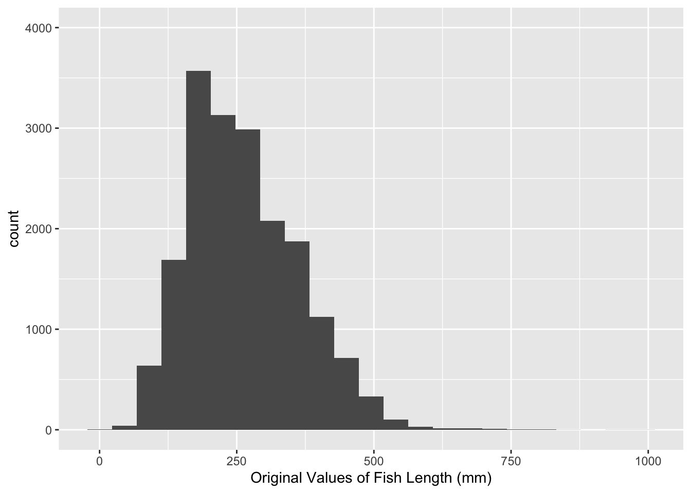

library(tidyverse)
fish <- read.csv("BlackfootFish.csv")Lab 7: Functions + Fish
The goal of this lab is learn more about exploring missing data and writing modular code.
The Data
This lab’s data concerns mark-recapture data on four species of trout from the Blackfoot River outside of Helena, Montana. These four species are rainbow trout (RBT), westslope cutthroat trout (WCT), bull trout, and brown trout.

Mark-recapture is a common method used by ecologists to estimate a population’s size when it is impossible to conduct a census (count every animal). This method works by tagging animals with a tracking device so that scientists can track their movement and presence.


Data Exploration
The measurements of each captured fish were taken by a biologist on a raft in the river. The lack of a laboratory setting opens the door to the possibility of measurement errors.
1. Let’s look for missing values in the dataset. Output ONE table that answers BOTH of the following questions:
- How many observations have missing values?
- What variable(s) have missing values present?
Tip
Hint: use across().
# Code for Q1.2. Create ONE thoughtful visualization that explores the frequency of missing values across the different years, sections, and trips.
# Code for Q2.Rescaling the Data
If I wanted to rescale every quantitative variable in my dataset so that they only have values between 0 and 1, I could use this formula:
\[y_{scaled} = \frac{y_i - min\{y_1, y_2,..., y_n\}}{max\{y_1, y_2,..., y_n\} - min\{y_1, y_2,..., y_n\}}\]
I might write the following R code to carry out the rescaling procedure for the length and weight columns of the BlackfootFish data:
fish <- fish |>
mutate(length = (length - min(length, na.rm = TRUE)) /
(max(length, na.rm = TRUE) - min(length, na.rm = TRUE)),
weight = (weight - min(weight, na.rm = TRUE)) /
(max(weight, na.rm = TRUE) - min(length, na.rm = TRUE)))This process of duplicating an action multiple times can make it difficult to understand the intent of the process. Additionally, it can make it very difficult to spot mistakes.
3. What is the mistake I made in the above rescaling code?
When you find yourself copy-pasting lines of code, it’s time to write a function, instead!
4. Transform the repeated process above into a rescale_01() function. Your function should…
- … take a single vector as input.
- … return the rescaled vector.
Tip
Think about the efficiency of your function. Are you calling the same function multiple times?
Look into the function range().
# Code for Q4 and Q5.5. Let’s incorporate some input validation into your function. Modify your previous code so that the function stops if …
- … the input vector is not numeric.
- … the length of the input vector is not greater than 1.
Tip
Do not create a new code chunk here – simply add these stops to your function above!
Test Your Function
6. Run the code below to test your function. Verify that the maximum of your rescaled vector is 1 and the minimum is 0!
x <- c(1:25, NA)
rescaled <- rescale_01(x)Error in rescale_01(x): could not find function "rescale_01"min(rescaled, na.rm = TRUE)Error: object 'rescaled' not foundmax(rescaled, na.rm = TRUE)Error: object 'rescaled' not foundNext, let’s test the function on the length column of the BlackfootFish data.
7. The code below makes a histogram of the original values of length. Add a plot of the rescaled values of length. Output your plots side-by-side, so the reader can confirm the only aspect that has changed is the scale.
Warning
This will require you to call your rescale_01() function within a mutate() statement in order to create a length_scaled variable.
Tip
Set the y-axis limits for both plots to go from 0 to 4000 to allow for direct comparison across plots.
Pay attention to
binwidth! Adjust it so that the plots are comparable (they may not look exactly the same).Look for a Quarto code-chunk option to put the plots side-by-side.
fish |>
ggplot(aes(x = length)) +
geom_histogram(binwidth = 45) +
labs(x = "Original Values of Fish Length (mm)") +
scale_y_continuous(limits = c(0,4000))
# Code for Q7 plot.Use Variables within a Dataset
Suppose you would like for your rescale() function to perform operations on a variable within a dataset. Ideally, your function would take in a dataframe and a variable name as inputs and return a dataframe where the variable has been rescaled.
8. Create a rescale_column() function that accepts two arguments: (1) a dataframe and (2) the name(s) of the variable(s) to be rescaled. The body of the function should call the original rescale_01() function you wrote previously. Your solution MUST use one of the rlang options from class.
Tip
If you are struggling with this task, I recommend looking here and at the slides from class on Wednesday!
# Code for Q8.9. Use your rescale_column() function to rescale both the length and weight columns.
Warning
I expect that you carry out this process by calling the rescale_column() function only ONE time!
# original values
fish |>
select(length:weight) |>
head() length weight
1 288 175
2 288 190
3 285 245
4 322 275
5 312 300
6 363 380# rescaled values
# Code for Q9.Condition Index
A frequently used measurement for fish health is a condition index (Wikipedia). The following equation can be used to calculate the approximate condition index of a fish:
\[\text{condition index} = \frac{weight}{length^3} \times 100\]
10. When calculating the condition index, fish length must be in centimeters and fish weight must be in grams. The weight data for the Blackfoot River fish were collected in grams, but the length data were collected in millimeters. Transform the length column to the correct units.
# Code for Q10.11. Collecting data of this sort can be very messy! Write a function that will replace unlikely length and weight measurements with NA. Your function should accept at least three inputs:
- a vector of measurements,
- the minimum reasonable value,
- the maximum reasonable value.
Tip
If you are struggling with the structure of your function, I would suggest reading the Mutating Function from R4DS.
# Code for Q11.12. After consulting the Montana Record Table for the 4 species of trout included in these data, I have conjectured that it is unlikely to have measurements for fish below 5 cm and above 80 cm in length or below 10 g and above 4,000 g in weight. Use your function to modify the length and weight columns of the fish dataset based on my cutoffs.
# Code for Q12.13. Write a function to calculate the condition index of a fish, given inputs of weight and length. Show that it works on your modified fish dataset
Warning
Consider whether your function will accept vectors as inputs or if it will accept variable names as inputs!
To show that your function works, do not print a full dataset! Just apply the function to your data and then output a couple of rows.
# Code for Q13.